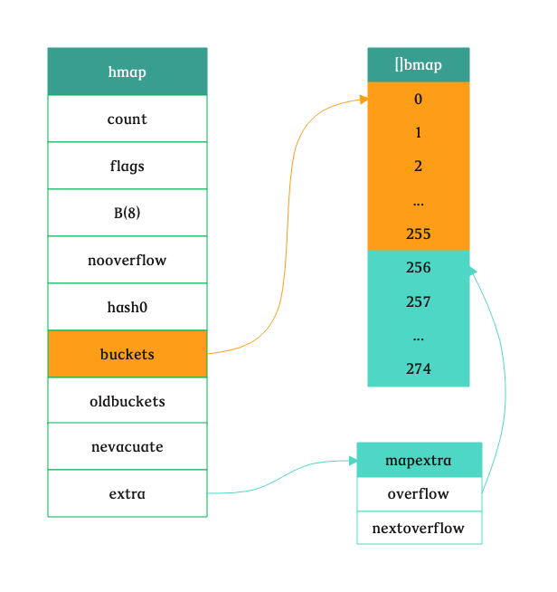

type bmap struct { // tophash generally contains the top byte of the hash value // for each key in this bucket. If tophash[0] < minTopHash, // tophash[0] is a bucket evacuation state instead. tophash [bucketCnt]uint8 // Followed by bucketCnt keys and then bucketCnt elems. // NOTE: packing all the keys together and then all the elems together makes the // code a bit more complicated than alternating key/elem/key/elem/... but it allows // us to eliminate padding which would be needed for, e.g., map[int64]int8. // Followed by an overflow pointer. }
// makemap implements Go map creation for make(map[k]v, hint). // If the compiler has determined that the map or the first bucket // can be created on the stack, h and/or bucket may be non-nil. // If h != nil, the map can be created directly in h. // If h.buckets != nil, bucket pointed to can be used as the first bucket. funcmakemap(t *maptype, hint int, h *hmap) *hmap {
// 计算 map 占用的内存是否溢出或者超出能分配的最大值 mem, overflow := math.MulUintptr(uintptr(hint), t.bucket.size) if overflow || mem > maxAlloc { hint = 0 }
// 初始化 map 以及随机数种子 if h == nil { h = new(hmap) } h.hash0 = fastrand()
// 根据传入的 hint 计算出最少需要的桶的数量 B := uint8(0) for overLoadFactor(hint, B) { B++ } h.B = B
// 假设 b = 8，map 的类型为 map[string]int funcmakeBucketArray(t *maptype, b uint8, dirtyalloc unsafe.Pointer) (buckets unsafe.Pointer, nextOverflow *bmap) { base := bucketShift(b) // 那么 base = 256 nbuckets := base // nbuckets 此时为 256 if b >= 4 { // 计算溢出桶的数量 nbuckets += bucketShift(b - 4) // nbuckets += (1 << (b - 4)) 值为 272 sz := t.bucket.size * nbuckets // t.bucket.size 为 208，sz = 56576 up := roundupsize(sz) // roundupsize 根据 sz 计算需要 56576 字节的内存时，mallocgc 需要申请 57344 字节 if up != sz { nbuckets = up / t.bucket.size // 根据需要申请的内存数量重新计算 nbuckets，将内存最大化利用，这里为：275 } }
if dirtyalloc == nil { buckets = newarray(t.bucket, int(nbuckets)) } else { // dirtyalloc was previously generated by // the above newarray(t.bucket, int(nbuckets)) // but may not be empty. buckets = dirtyalloc size := t.bucket.size * nbuckets if t.bucket.ptrdata != 0 { memclrHasPointers(buckets, size) } else { memclrNoHeapPointers(buckets, size) } }
if base != nbuckets { // We preallocated some overflow buckets. // To keep the overhead of tracking these overflow buckets to a minimum, // we use the convention that if a preallocated overflow bucket's overflow // pointer is nil, then there are more available by bumping the pointer. // We need a safe non-nil pointer for the last overflow bucket; just use buckets. // 计算出第一个溢出桶的位置和最后一个溢出桶的位置 nextOverflow = (*bmap)(add(buckets, base*uintptr(t.bucketsize))) last := (*bmap)(add(buckets, (nbuckets-1)*uintptr(t.bucketsize))) last.setoverflow(t, (*bmap)(buckets)) } return buckets, nextOverflow }
这个时候看到的正常桶和溢出桶应该如下图所示，它们是连接在一起的：

哈希函数
hmap 是否高效很大一部分取决于哈希函数的选择，即要快，也要冲突少。在程序启动的时候，Go 会检测 CPU 是否支持 AES，如果支持则会使用 AES 哈希，通过硬件加速提高效率，这部分实现是在 runtime.alginit 中：
funcmapaccess2_faststr(t *maptype, h *hmap, ky string) (unsafe.Pointer, bool) { if raceenabled && h != nil { callerpc := getcallerpc() racereadpc(unsafe.Pointer(h), callerpc, abi.FuncPCABIInternal(mapaccess2_faststr)) }
// 为 nil 时或者长度为0时，直接返回 if h == nil || h.count == 0 { return unsafe.Pointer(&zeroVal[0]), false } // 不支持并发读写 if h.flags&hashWriting != 0 { throw("concurrent map read and map write") } key := stringStructOf(&ky) if h.B == 0 { // B = 0 的时候，2^0 = 1，也就是只有 1 个 bucket 了 b := (*bmap)(h.buckets) if key.len < 32 { // 如果 key 比较短，直接比较就 OK 了，每次迭代的时候，kptr += 2*goarch.PtrSize // 这里是因为 string 在字符串表示为 reflect.StringHeader，它占据2个机器字 for i, kptr := uintptr(0), b.keys(); i < bucketCnt; i, kptr = i+1, add(kptr, 2*goarch.PtrSize) { k := (*stringStruct)(kptr)
// 如果当前 key 长度不相等，并且当前cell是空的，且后面的cell都为空，就直接退出了 // 如果当前 key 长度不相等，并且当前cell是空的，但是后面的cell还可能有，就接着找 if k.len != key.len || isEmpty(b.tophash[i]) { if b.tophash[i] == emptyRest { break } continue } // 如果长度相等，并且内容相等，就返回值的地址 // dataOffset 就是 bmap 的大小，unsafe.Pointer(b) + dataOffset+bucketCnt*2*goarch.PtrSize 就是跳过了 // 所有 8 个 key，然后再加上 i*uintptr(t.elemsize)，就找到了对应值的地址 if k.str == key.str || memequal(k.str, key.str, uintptr(key.len)) { return add(unsafe.Pointer(b), dataOffset+bucketCnt*2*goarch.PtrSize+i*uintptr(t.elemsize)), true } } return unsafe.Pointer(&zeroVal[0]), false } // 对于较长的 key，尽可能少做比较，key 和 elem 位置的计算没有区别 keymaybe := uintptr(bucketCnt) for i, kptr := uintptr(0), b.keys(); i < bucketCnt; i, kptr = i+1, add(kptr, 2*goarch.PtrSize) { k := (*stringStruct)(kptr) if k.len != key.len || isEmpty(b.tophash[i]) { if b.tophash[i] == emptyRest { break } continue } if k.str == key.str { return add(unsafe.Pointer(b), dataOffset+bucketCnt*2*goarch.PtrSize+i*uintptr(t.elemsize)), true } // check first 4 bytes if *((*[4]byte)(key.str)) != *((*[4]byte)(k.str)) { continue } // check last 4 bytes if *((*[4]byte)(add(key.str, uintptr(key.len)-4))) != *((*[4]byte)(add(k.str, uintptr(key.len)-4))) { continue } if keymaybe != bucketCnt { // Two keys are potential matches. Use hash to distinguish them. goto dohash } keymaybe = i } if keymaybe != bucketCnt { k := (*stringStruct)(add(unsafe.Pointer(b), dataOffset+keymaybe*2*goarch.PtrSize)) if memequal(k.str, key.str, uintptr(key.len)) { return add(unsafe.Pointer(b), dataOffset+bucketCnt*2*goarch.PtrSize+keymaybe*uintptr(t.elemsize)), true } } return unsafe.Pointer(&zeroVal[0]), false } dohash: // 根据对应类型的 hash 函数计算哈希值 hash := t.hasher(noescape(unsafe.Pointer(&ky)), uintptr(h.hash0)) // m = (1 << h.B) - 1，如果 h.B = 2，那么 m = 3 m := bucketMask(h.B) // 找到对应的 bucket，add(h.buckets, (hash&m)*uintptr(t.bucketsize)) // hash & m，确定桶的编号，然后 h.buckets + (hash&m)*uintptr(t.bucketsize) 得到 // 桶的地址 b := (*bmap)(add(h.buckets, (hash&m)*uintptr(t.bucketsize))) // oldbuckets 不为空，说明发生了扩容，当前 map 是从旧的 map 扩展而来，一些数据可能还存在旧的 bucket 中 if c := h.oldbuckets; c != nil { // 如果同大小扩容 if !h.sameSizeGrow() { // 新 bucket 的数量是老的两倍，所以 m >> 1 m >>= 1 } // 计算这个key在老的bucket中的位置 oldb := (*bmap)(add(c, (hash&m)*uintptr(t.bucketsize))) // 如果这个 bucket 还没有迁移到新的 bucket 中，那么就从老的bucket中找 if !evacuated(oldb) { b = oldb } } // 计算出高8位hash值，其实就是 uint8(hash >> 56) // 由于 bucket 的状态也是放在它的 tophash 数组中的，用到的状态值是 0-5 // 所以根据 key 计算出的 tophash 如果小于 minTopHash，要加上 minTopHash，要加上 top := tophash(hash) for ; b != nil; b = b.overflow(t) { for i, kptr := uintptr(0), b.keys(); i < bucketCnt; i, kptr = i+1, add(kptr, 2*goarch.PtrSize) { k := (*stringStruct)(kptr) if k.len != key.len || b.tophash[i] != top { continue } if k.str == key.str || memequal(k.str, key.str, uintptr(key.len)) { return add(unsafe.Pointer(b), dataOffset+bucketCnt*2*goarch.PtrSize+i*uintptr(t.elemsize)), true } } } return unsafe.Pointer(&zeroVal[0]), false }
// tophash calculates the tophash value for hash. functophash(hash uintptr)uint8 { top := uint8(hash >> (goarch.PtrSize*8 - 8)) if top < minTopHash { top += minTopHash } return top }
// Possible tophash values. We reserve a few possibilities for special marks. // Each bucket (including its overflow buckets, if any) will have either all or none of its // entries in the evacuated* states (except during the evacuate() method, which only happens // during map writes and thus no one else can observe the map during that time). emptyRest = 0// 空的 Cell，也是 bucket 的初始状态，并且此 bucket 的后续 cell 以及 overflow bucket 都是空的 emptyOne = 1// 当前 Cell 是空的 evacuatedX = 2// k/v 已经搬迁到新 bucket 的前半部分 evacuatedY = 3// k/v 已经搬迁到新 bucket 的后半部分 evacuatedEmpty = 4// 空的 cell，bucket 已经搬迁了 minTopHash = 5// tophash 的最小正常值
// Like mapaccess, but allocates a slot for the key if it is not present in the map. funcmapassign(t *maptype, h *hmap, key unsafe.Pointer) unsafe.Pointer { // map 为 nil 时，会 panic if h == nil { panic(plainError("assignment to entry in nil map")) }
if raceenabled { callerpc := getcallerpc() pc := abi.FuncPCABIInternal(mapassign) racewritepc(unsafe.Pointer(h), callerpc, pc) raceReadObjectPC(t.key, key, callerpc, pc) } if msanenabled { msanread(key, t.key.size) } if asanenabled { asanread(key, t.key.size) }
// 下节详解，map 是渐进式扩容，扩容过程中涉及到数据的迁移，将其平摊到每次对map的赋值或者删除操作 if h.growing() { growWork(t, h, bucket) }
// 计算出桶的地址，强制转换成 bmap 对象 b := (*bmap)(add(h.buckets, bucket*uintptr(t.bucketsize))) // 计算 tophash，右移56位，转换成 uint8 类型，如果小于 minTopHash，则加上它 top := tophash(hash)
var inserti *uint8// 指向第一个空闲的 tophash 的地址 var insertk unsafe.Pointer // 指向第一个空闲的 key 的地址 var elem unsafe.Pointer // 指向第一个空闲的 value 的地址 bucketloop: for { for i := uintptr(0); i < bucketCnt; i++ { // 找到空闲的槽 if b.tophash[i] != top { if isEmpty(b.tophash[i]) && inserti == nil { inserti = &b.tophash[i] insertk = add(unsafe.Pointer(b), dataOffset+i*uintptr(t.keysize)) elem = add(unsafe.Pointer(b), dataOffset+bucketCnt*uintptr(t.keysize)+i*uintptr(t.elemsize)) } // 如果这个空闲的槽后面没有任何内容，就直接跳出 bucketloop 循环 if b.tophash[i] == emptyRest { break bucketloop } continue }
// 赋值的时候发现值已经存在，那就跟心 k := add(unsafe.Pointer(b), dataOffset+i*uintptr(t.keysize)) if t.indirectkey() { // 间接key说明，k这里存的是key的指针，而不是key的值，即指向指针的指针 k = *((*unsafe.Pointer)(k)) }
// tooManyOverflowBuckets reports whether noverflow buckets is too many for a map with 1<<B buckets. // Note that most of these overflow buckets must be in sparse use; // if use was dense, then we'd have already triggered regular map growth. functooManyOverflowBuckets(noverflow uint16, B uint8)bool { // If the threshold is too low, we do extraneous work. // If the threshold is too high, maps that grow and shrink can hold on to lots of unused memory. // "too many" means (approximately) as many overflow buckets as regular buckets. // See incrnoverflow for more details. if B > 15 { B = 15 } // The compiler doesn't see here that B < 16; mask B to generate shorter shift code. return noverflow >= uint16(1)<<(B&15) }
// 如果有 goroutine 正在遍历 map，并且两个相同的 key 哈希值还不相等，这种事只有 // 浮点数的 NaN 值才搞得出来 if h.flags&iterator != 0 && !t.reflexivekey() && !t.key.equal(k2, k2) { // If key != key (NaNs), then the hash could be (and probably // will be) entirely different from the old hash. Moreover, // it isn't reproducible. Reproducibility is required in the // presence of iterators, as our evacuation decision must // match whatever decision the iterator made. // Fortunately, we have the freedom to send these keys either // way. Also, tophash is meaningless for these kinds of keys. // We let the low bit of tophash drive the evacuation decision. // We recompute a new random tophash for the next level so // these keys will get evenly distributed across all buckets // after multiple grows. useY = top & 1 top = tophash(hash) } else {
// 获取 bucket 编号，如果处于扩容过程中，那么就进行扩容 bucket := hash & bucketMask(h.B) if h.growing() { growWork(t, h, bucket) } b := (*bmap)(add(h.buckets, bucket*uintptr(t.bucketsize))) bOrig := b top := tophash(hash) search: // 遍历所有的溢出桶 for ; b != nil; b = b.overflow(t) { for i := uintptr(0); i < bucketCnt; i++ { // 如果这个bucket当前槽及其后面都是空的，直接退出 if b.tophash[i] != top { if b.tophash[i] == emptyRest { break search } continue }
// 定位到 key 的位置 k := add(unsafe.Pointer(b), dataOffset+i*uintptr(t.keysize)) k2 := k if t.indirectkey() { k2 = *((*unsafe.Pointer)(k2)) } if !t.key.equal(key, k2) { continue }
// 检测当前cell后面的是否都是空的，如果是那就将当前 cell 的状态置成 emptyRest if i == bucketCnt-1 { if b.overflow(t) != nil && b.overflow(t).tophash[0] != emptyRest { goto notLast } } else { if b.tophash[i+1] != emptyRest { goto notLast } }
for { b.tophash[i] = emptyRest if i == 0 { if b == bOrig { break// beginning of initial bucket, we're done. } // Find previous bucket, continue at its last entry. c := b for b = bOrig; b.overflow(t) != c; b = b.overflow(t) { } i = bucketCnt - 1 } else { i-- } if b.tophash[i] != emptyOne { break } } notLast: h.count-- // 重置哈希种子，使得攻击者重复触发哈希冲突的可能性降低 if h.count == 0 { h.hash0 = fastrand() } break search } }
但是在计算浮点数哈希值的时候做了一些额外的处理，NaN 的哈希值计算引入了额外的随机数，导致每次使用runtime.f64hash计算 NaN 的哈希值都会得到不同的结果，所以可以往浮点数做键的 map 中插入任意数量的 NaN：
1 2 3 4 5 6 7 8 9 10 11
funcf64hash(p unsafe.Pointer, h uintptr)uintptr { f := *(*float64)(p) switch { case f == 0: return c1 * (c0 ^ h) // +0, -0 case f != f: return c1 * (c0 ^ h ^ uintptr(fastrand())) // any kind of NaN default: return memhash(p, h, 8) } }